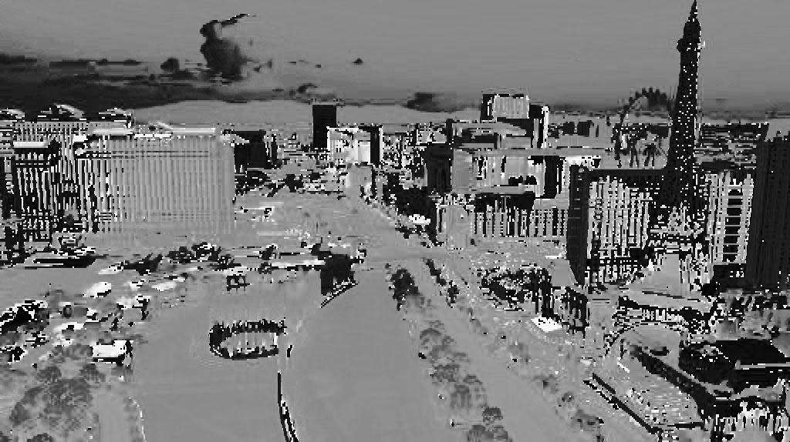
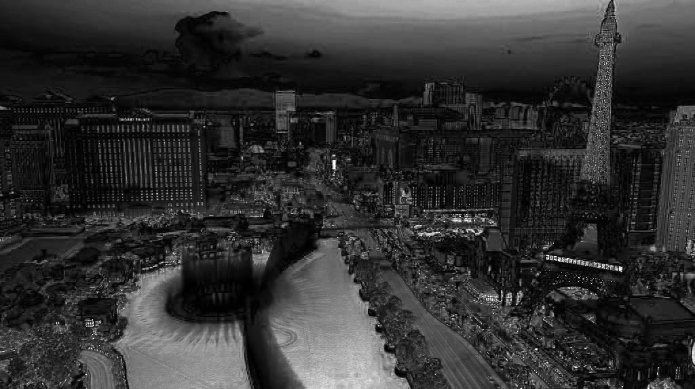
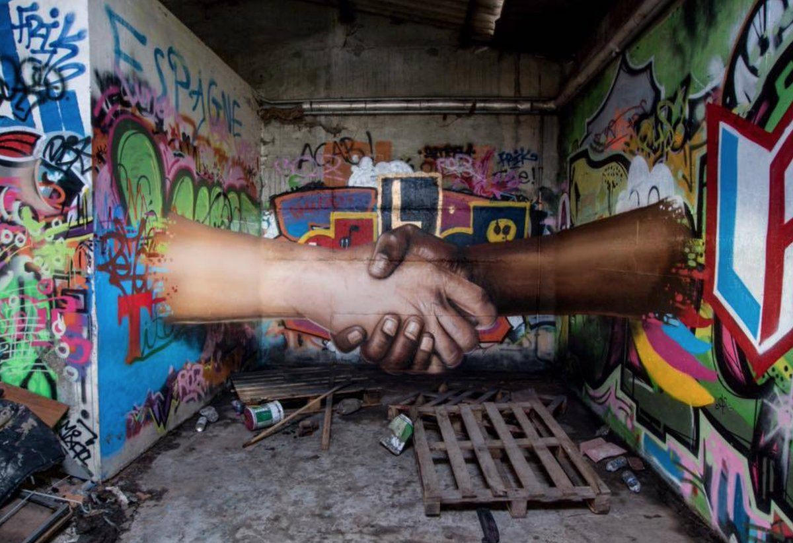
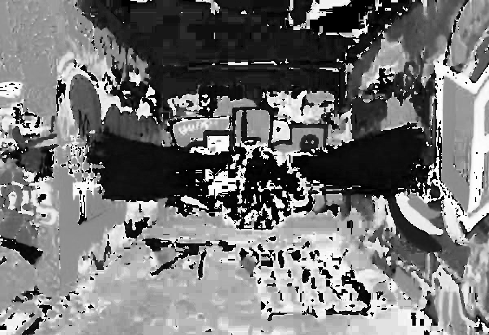

By Paul Joy
Find two color photos (one more colorful than the other) and compute three output images for each of them to display their HIS values.
These output images are in gray level with pixel intensity in [0, 255], which represent Intensity, Saturation, and Hue of the color
pixel in the photo.
Original Image:
Hue average value: 115.46
Intensity average value: 131.88
Saturation average value: 49.75
Original Image:
Hue average value: 116.90
Intensity average value: 79.59
Saturation average value: 60.20
Using the following code: View